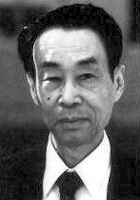
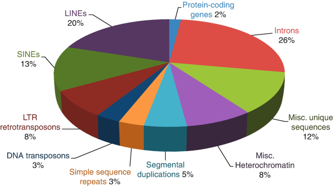
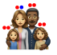
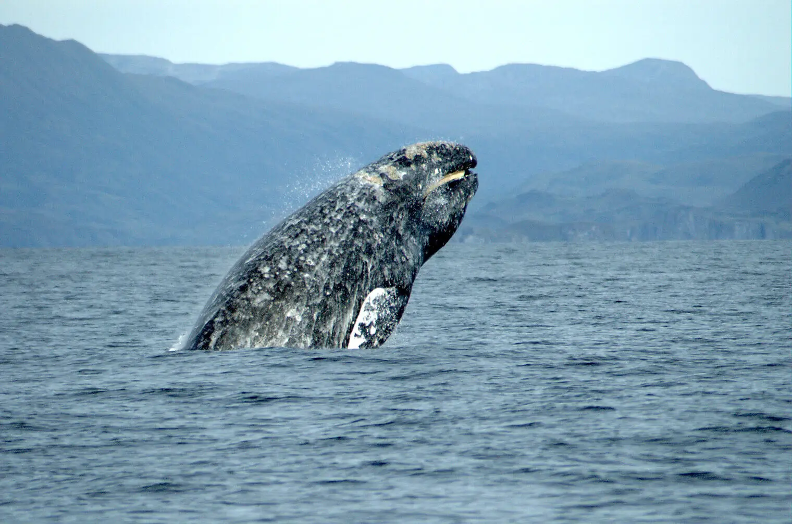
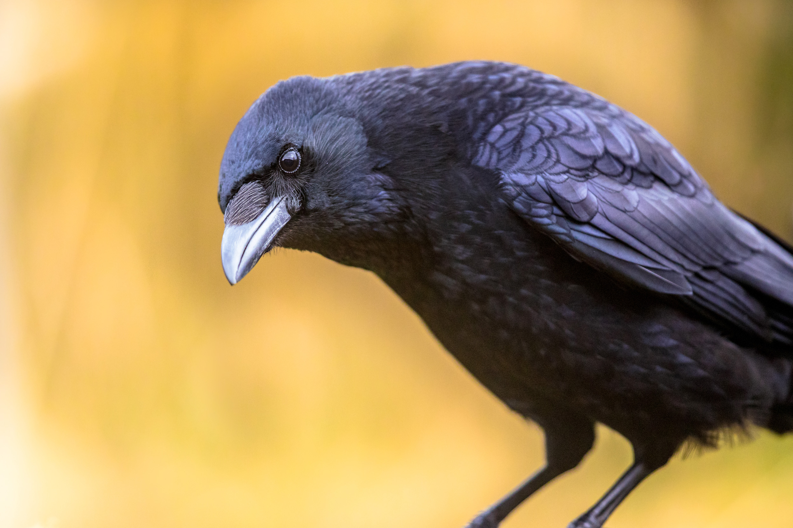
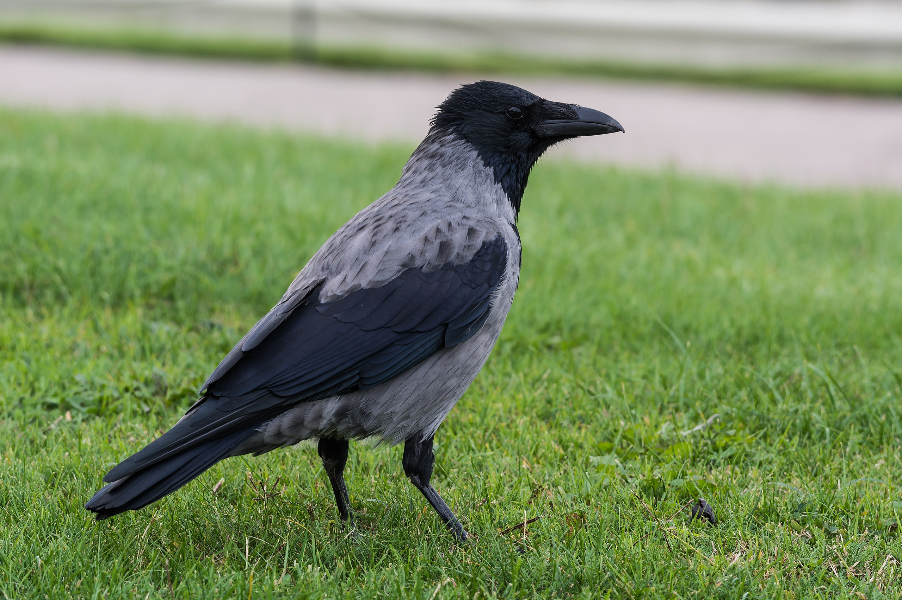
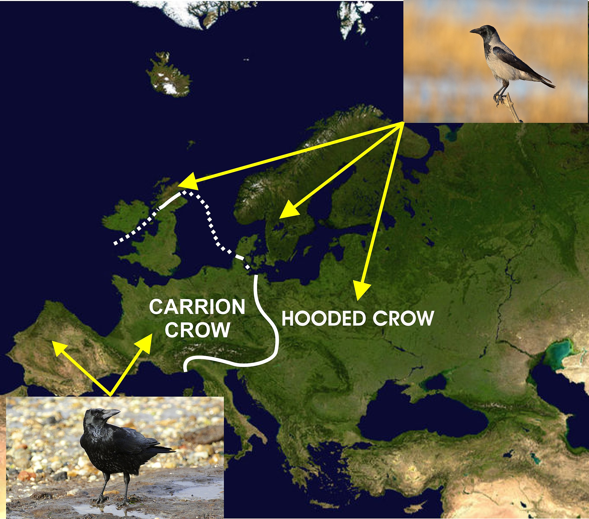

Drift and Variation
ENS-2400: Evolutionary Biology
Dr Axel Barlow
email: a.barlow@bangor.ac.uk
Molecular Ecology and Evolution at Bangor (MEEB)
- 3rd year module "Molecular ecology and evolution"
- https://www.bangor.ac.uk/meeb

Axel Barlow research group
- Population genomics, Paleogenomics, Conservation genomics
- Dissertation and MSc projects


Lecture schedule
- Drift and variation (Evolution: Chapter 6)
- Conservation genetics (Evolution: Chapter 6)
- Phylogeny 1 (Evolution: Chapter 16)
- Phylogeny 2 (Evolution: Chapter 16)
Literature
Course textbook
Futuyma & Kirkpatrick. Evolution (5th Edition)
Available as E-book from library
Other papers indicated in lectures

Key concepts
Genetic locus (plural loci)
- Working definition: "a single position on a chromosome"
- Examples: SNP, gene, exon, mitochondrial DNA
In diploid species
- Individuals (mostly) have 2 copies of each locus: 1 from mum, 1 from dad
- Except some haploid loci (e.g. Y chr, mtDNA)

Alleles
- An Allele is a particular genetic variant of a locus
- An individual is heterozygous at a locus when it has different alleles
- Homozygous is 2 copies of same allele
- We can also measure allele frequencies
For example
- Frequency A and B is 50% (or 0.5)
- Frequencies always sum to 100% (or 1)
- Selection on A increases its frequency
Neutral evolution
- Darwin thought about evolution in terms of natural selection
- What if there is no selection?
- Motoo Kimura: Neutral theory of molecular evolution, 1968
- Loci evolve by genetic drift
- Drift is determined by the population size
- Basis of population genetics and phylogenetics
- "Null hypothesis" of molecular evolution

How much of the genome is selectively neutral?
Human as an example
- Protein coding sequences = 2%
- Functional 10-20%
- Synonymous mutations
- Introns
- Neutral alleles
- Selection is rare

Genetic drift
Definition
- Allele frequencies will change from one generation to the next due to chance events
- includes survival, reproduction, and inheritance.
This is Genetic drift
- The change occurs at random.
- It does not involve one allele being favoured over another. That is selection (different process)
- Drift affects all loci in the genome
- Drift affects all populations of all species



The process visually

Simulator
Obs 1. Drift is unbiased
Obs 2. Fluctuations are larger in small populations
Obs 2. Fluctuations are larger in small populations
- This is a sampling effect:
- Small samples are less likely to reflect the starting frequencies.
- Consider flipping a coin 3x vs 3,000x
- Outcomes become more consistent when averaging over a larger number of random events
- Drift is stronger in small populations
- Drift is weaker in large populations
.jpg)
Obs 3. Drift causes populations to become different
Obs 3. Drift causes populations to become different

Adder, Anglesey

Adder, Black Forest
Obs 4. Drift causes a loss of variation
Obs 4. Drift causes a loss of variation
- Genetic variation is continually lost
- Rate of loss determined by strength of drift
- Can be replaced by mutation or gene flow
- Example: isogenic lab mice: 20 generations of brother x sister mating

Drift and selection
Drift and selection
(positive) Selection
- One allele is favoured over another
- Depends on high big the fitness difference is (selection coefficient = s)
Drift
- Drift affects all loci in all populations of all species
- Stronger in small populations and weaker in large populations
Both processes
- Cause a reduction in diversity
- Cause populations to become different

Selection and drift
Selection more effective in large populations

- Drosophila melanogaster
- population size ~1 million
- s = 0.00001 = adaptive evolution

- Grey whale
- population size 10,000
- s = 0.00001 = effectively neutral
Detecting selection
- Harder than you might think
- Drift is null hypothesis
- Always operates
- Creates similar signal:
- change in allele frequencies
- loss of diversity
- population divergence
- Look for signal above the background level of drift
Hooded and carrion crows



Hooded and carrion crows
Genetic drift summary
- Allele frequencies will change from one generation to the next due to chance events
- Such as survival, reproduction, and inheritance.
- Drift is unbiased, no allele is favoured
- Drift causes a loss of genetic variation (replaced by mutation or gene flow)
- Strength of drift is larger in small populations
- Drift causes populations to become different
- Selection share some features with drift, but alleles are favoured
- Selection is more effective when drift is weak
- We need to account for drift when testing for selection
Next time:
Conservation genetics